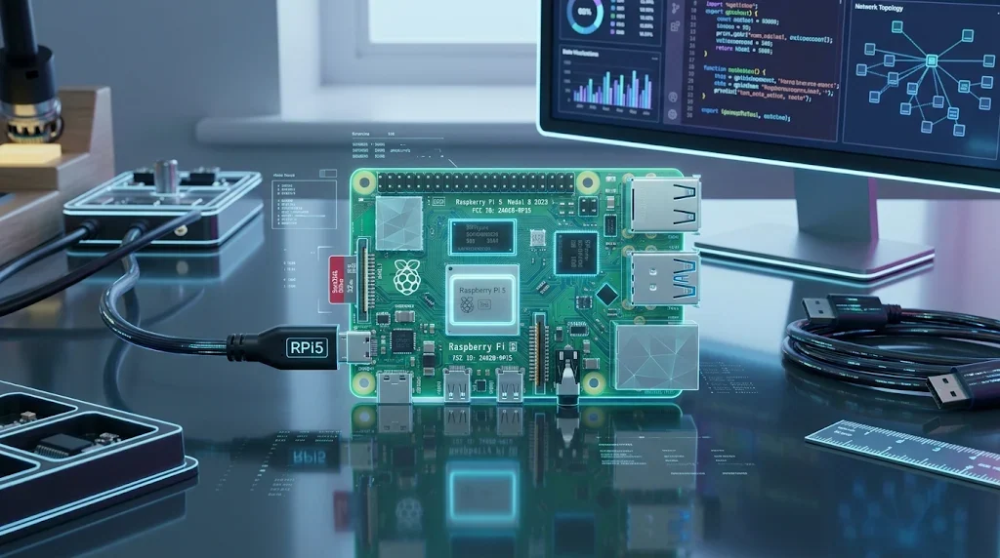

Raspberry Pi 5, işlemci, bellek ve giriş-çıkış bağlantılarını tek bir küçük devre kartında birleştiren tek kartlı bir bilgisayar. Uygun işletim sistemi ve depolamayla masaüstü bilgisayar gibi kullanılabilir; aynı zamanda elektronik devreleri kontrol eden projelerin beyni olabilir. En güçlü yanı yalnızca boyutu değil, Linux ve donanımla deneme yapmayı erişilebilir kılan geniş topluluk ve eğitim ekosistemi.
Bu kartı bilgisayar yapan ne?
Raspberry Pi 5, Raspberry Pi Foundation'ın 2023'te duyurduğu beşinci nesil genel amaçlı bilgisayar kartı. Üreticinin belirttiği donanımda 2,4 GHz'e kadar çalışan dört çekirdekli 64 bit Arm Cortex-A76 işlemci, VideoCore VII grafik birimi, USB bağlantıları, Wi‑Fi, Bluetooth, Ethernet ve iki adet 4K ekran çıkışı bulunuyor. Kartın 40 pinli GPIO başlığı ise uyumlu sensör ve elektronik parçalarla etkileşim kurmaya imkân veriyor.
GPIO pinleri normal USB girişleri gibi değildir: bazıları güç ve toprak içindir, bazıları dijital sinyal taşır. Bileşenlerin elektrik gereksinimleri ve pin düzeni kontrol edilmeden bağlantı yapmak karta zarar verebilir. Projeye başlamadan önce resmi pin şeması ve uygun devre örnekleri incelenmelidir.
Hangi projelerde işe yarar?
- Programlama ve Linux öğrenimi: Raspberry Pi OS gibi Linux tabanlı bir işletim sistemiyle terminal, dosyalar, Python ve temel sistem yönetimi öğrenilebilir.
- Elektronik ve robotik denemeleri: GPIO üzerinden sensör, LED ve motor sürücüsü gibi uygun bileşenler kontrol edilebilir. Gerçek motor veya yüksek akım gerektiren devrelerde arayüz ve güç koruması gerekir.
- Küçük ev sunucusu: Sürekli açık kalması gereken hafif ağ hizmetleri veya kişisel projeler çalıştırılabilir. İnternete açık sunucularda güvenlik güncellemeleri ve ağ yapılandırması kullanıcının sorumluluğundadır.
- Masaüstü ve medya: Ekran, klavye, fare ve depolama eklenerek web, ofis ve medya amaçlı kullanılabilir; performans ve yazılım uyumluluğu tam boyutlu modern bilgisayarlarla aynı değildir.
Kartı alınca başka neler gerekir?
Raspberry Pi 5 tek başına bir dizüstü bilgisayar değildir: genellikle USB‑C güç kaynağı, işletim sistemi için microSD kart veya uyumlu başka bir depolama, ekran ve giriş aygıtları gerekir. Kartı korumak için kasa da tercih edilebilir. Yoğun iş yüklerinde sıcaklık yükselip işlemci hızını sınırlayabileceğinden uygun soğutma gerekebilir. PCIe bağlantısını veya M.2 SSD gibi genişletmeleri kullanmak için uyumlu ek kart ve aksesuar gerekir.
Bu parçalar pakete ve satıcıya göre değişebilir. Bu yüzden yalnızca kartın fiyatına bakmak, kullanıma hazır sistemin toplam maliyetini olduğundan düşük gösterebilir. Satın almadan önce elinizdeki güç kaynağı, depolama ve aksesuarların Pi 5 ile uyumlu olup olmadığını kontrol edin.
Sınırları: her bilgisayarın yerini tutmaz
Pi 5, tarayıcı ve masaüstü uygulamaları çalıştırabilse de çoklu görev, ağır video düzenleme, modern 3D oyunlar veya yoğun hesaplama için tasarlanmış genel amaçlı bir masaüstü bilgisayarın doğrudan alternatifi değildir. Depolama performansı kullanılan karta ya da ek depolama çözümüne; hız ve sıcaklık ise iş yüküne, güç kaynağına ve soğutmaya bağlıdır. Bağımsız donanım incelemeleri de performans artışının yanında güç ve termal gereksinimlerin değerlendirilmesi gerektiğini vurguluyor.
Dolayısıyla iyi bir seçim olup olmadığı kullanım amacına bağlı: hedef Linux öğrenmek, sensörlerle deney yapmak veya düşük kaynak isteyen bir hizmeti çalıştırmaksa küçük boyutu ve esnek bağlantıları kullanışlı olabilir. Yalnızca internete girmek ve ofis işi yapmak için ucuz bir bilgisayar arıyorsanız, güç kaynağı ve diğer parçalar eklendiğinde farklı seçenekleri toplam maliyet üzerinden karşılaştırmak gerekir.
Kaynaklar
- Raspberry Pi. Introducing: Raspberry Pi 5! İşlemci, bağlantılar ve kart özelliklerine dair üreticinin duyurusu. Raspberry Pi Foundation.
- Raspberry Pi. Raspberry Pi 5 Documentation. Kurulum, güç, soğutma, GPIO ve PCIe kullanımı için resmi teknik belgeler. Resmi dokümantasyon.
- Tom's Hardware. Raspberry Pi 5 Review. Donanım, güç, ısı ve kullanım alanları üzerine bağımsız inceleme. Tom's Hardware.
Üretici kaynakları donanım özellikleri için; bağımsız inceleme ise kullanım ve sınırlar için kullanılmıştır. Ürün fiyatı ve kutu içeriği ülke ile satıcıya göre değişebilir. Kaynaklar 8 Kasım 2026 tarihinde kontrol edildi.